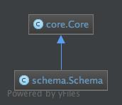

Schema Module¶
The classes utilized to construct schemas for object definitions.
Contents
Usage¶
The schema_type module contains the class Schema and a set of
functions to create and validate schema. Schema are used to validate
ontic.ontic_type.OnticType derived instances.
Creating Schema¶
A Schema is defined as a dictionary with the key entry being the name
of the property. The value portion of the dictionary is a
ontic.meta_type.PropertySchema instance:
>>> a_schema = Schema([
... property.OnticProperty(name='property_name', type= 'str')
... ])
While the example above give a strict definition of a schema, creation of a schema can omit the use of the PropertySchema, as the Schema instantiation will convert a dict value to a PropertySchema object. The above example can be simplified to be:
>>> a_schema = Schema([
... {'name': 'property_name', 'type': 'str'}
... ])
The Schema also supports the dict style of instantiation via parameter naming:
>>> a_schema = Schema(property_name={'type': 'str'})
Dynamic Schema¶
In cases where necessary, a Schema can be created dynamically:
>>> a_schema = Schema()
>>> a_schema.add(property.OnticProperty({'name': 'a', 'type': 'str'}))
To aid in the handling of dynamic models, utilize the perfect_schema()
and validate_schema().
>>> perfect_schema(a_schema)
>>> errors = validate_schema(a_schema)
Classes¶
SchemaType¶
- class ontic.schema.Schema(*args, **kwargs)¶
The type definition for a schema object.
The Schema contains a dictionary of property field names and the corresponding OnticProperty definition.
Example Schema representation:
Schema({ 'some_property': Schema({ 'type': 'str', 'required': True }) })
For a complete list of
OnticPropertysettings, see Available Property Schema Settings.- __init__(*args, **kwargs)¶
- add(property_type: OnticProperty) NoReturn¶
Add a property definition to a schema.
- Parameters
property_type –
- perfect() NoReturn¶
Method to clean and perfect a given schema.
The perfect will fill in any missing schema settings for each of the
OnticProperty. This function should be used to ensure property schema completeness.
- validate(raise_validation_exception: bool = True)¶
Validate a given
Schema.This method will iterate through all of the
OnticPropertyand validate that each definition is valid. The method will collect all of the errors and return those as a list of strings or raise aontic.validation_exception.ValidationException. The switch in behavior is determined by the raise_validation_exception- Parameters
raise_validation_exception (bool) – If True, then validate_schema will throw a ValidationException upon validation failure. If False, then a list of validation errors is returned. Defaults to True.
- Returns
List of errors found. Empty of no errors found.
- Return type
list<str>
- Raises
ValueError – candidate_schema is None, or not of type
Schema.ValidationException – A property of candidate_schema does not meet schema requirements.
Functions¶
perfect_schema¶
- ontic.schema.perfect_schema(ontic_schema: OnticProperty) NoReturn¶
Method to clean and perfect a given schema.
The perfect_schema will fill in any missing schema setting for each of the
OnticProperty. This function should be used to ensure property schema completeness.- Parameters
ontic_schema – The schema that is to be perfected.
validate_schema¶
- ontic.schema.validate_schema(ontic_schema: OnticProperty, raise_validation_exception: bool = True)¶
Validate a given
Schema.This method will iterate through all of the
OnticPropertyand validate that each definition is valid. The method will collect all of the errors and return those as a list of strings or raise aontic.validation_exception.ValidationException. The switch in behavior is determined by the raise_validation_exception- Parameters
ontic_schema – The schema to be validated.
raise_validation_exception – If True, then validate_schema will throw a ValidationException upon validation failure. If False, then a list of validation errors is returned. Defaults to True.
- Returns
List of errors found. Empty of no errors found.
- Raises
ValueError – ontic_schema is None, or not of type
Schema.ValidationException – A property of ontic_schema does not meet schema requirements.